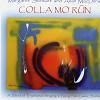

Celtic Lyrics Corner > Artists & Groups > Margaret Stewart > Colla Mo Rùn > Rinn Thu Eudail Mo Mhealladh
|  | Rinn Thu Eudail Mo Mhealladh |
| Credits : | Traditional; arranged by Margaret Stewart & Allan MacDonald |
| Appears On : | Colla Mo Rùn |
| Language : | Gàidhlig (Scottish Gaelic) |
| Lyrics : | English Translation : |
| Sèist : | Chorus : |
| I hiùraibh, i hiùraibh | I hiùraibh, i hiùraibh |
| I hiùraibh o gheallaidh | I hiùraibh o gheallaidh |
| I hiùraibh ó éile | I hiùraibh ó éile |
| Rinn thu eudail mo mhealladh | You, my beloved, deceived me |
| Sann an toiseach a' bhàta | It's at the prow of the boat |
| Tha mo ghràdh dha na fearaibh | That my beloved of men is |
| Sùil chorrach ghorm liònta | Eyes passionate blue and satiated |
| Gruaidh mhìn-dhearg, beul tana | Cheeks soft-red, slim mouth |
| (Sèist) | (Chorus) |
| Thoir an t-soraidh seo bhuamsa | Bear this greeting from me |
| Gu Sliabh nan Tri Seallaidh | To the Plain of the Three Visions |
| Chun an òganaich chiataich | To the elegant young man |
| Tha 'n iar air na Gallaibh | Who is west of the Lowlands |
| Gura mis' tha gu brònach | How dejected I am |
| 'S mo shùilean sìor lasadh | And my eyes verily shining |
| Ged nach fhaic mi ri m' bheò thu | Although I may not see you in my lifetime |
| Guma slàn thig thu dhachaigh | May you return home safely |
| (Sèist) | (Chorus) |